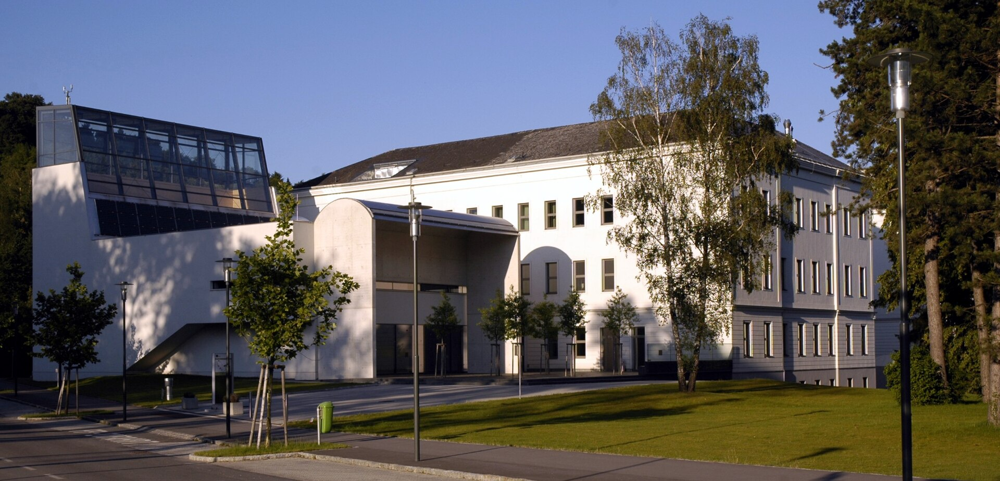

Mathematical
physics
Rigorous structures behind physical phenomena, with a particular focus on quantum systems.
PhD researcher · ISTA
I work at the border of mathematics and physics, studying the collective structures that emerge in quantum many-body systems.
Overview
I work on interacting quantum many-body systems and topological phases of matter, using rigorous mathematical methods.
Rigorous structures behind physical phenomena, with a particular focus on quantum systems.
Bose–Einstein condensation in ideal and interacting Bose gases.
Classification and stability of phases whose essential properties live beyond local order.
Solar and stellar flares: linking high-resolution solar observations to the spectra of distant stars.

Now
I am a PhD student working with Robert Seiringer in Klosterneuburg, Austria.
See my CV →Collaborations
I am interested in collaborations across mathematical physics, mathematics, physics and any other interesting question. You can always reach out.
michiel.dewilde@ist.ac.at →“Science is being stuck on a problem
in such a way that you make progress.”